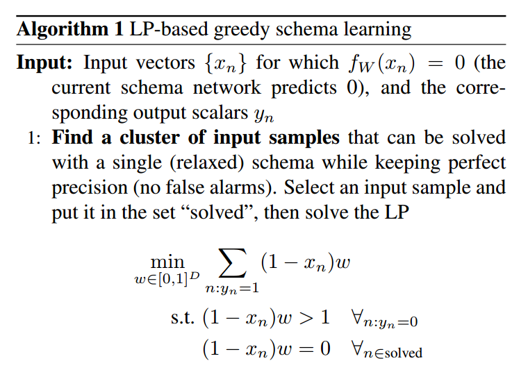
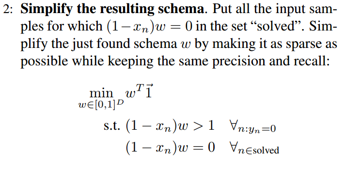
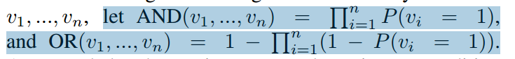

Schema Networks: Zero-shot Transfer with a Generative Causal Model of Intuitive Physics
这篇文章主要想要解决的问题是
1. 从以前学习的场景迁移到新的类似场景
2. 从因果(cause and effect)的角度来推理问题
A3C 智能体会对一个特定策略进行「过拟合」（overfit），去开发训练过的游戏版本中的特定数据。但是它没有对游戏的动态变化和规则进行概念性的理解。
从因果（cause and effect）的角度来理解这个世界是人类智力的重要标志之一。这种能力可以让我们通过对我们已有的知识信息进行「迁移」（transferring），从而快速地理解新的情境，比如一个新的电子游戏。

看上去效果真好
A3C作为目前最先进的算法
虽然应对Breakout有很好的效果
但对于Breakout的一些变种
不能直接迁移
所以他们提出一种网络结构
图式网络(Schema Network)
依赖于状态输入
而非原生图像
图式网络的架构
- 实体属性的变化
- 未来的回报
- 实体k属性的自我转换
- 图式网络一部分的示例
什么是实体?
对于Breakout就是球, 板子, 砖块
什么是属性?
球的位置, 板子的位置 等等

1. 找到一个输入特征, 使用线性规划去求解

2. 削减schema, 保持精确度和召回率

- 从环境中得到实体和属性
- 使用AND和OR这样的操作来预测属性的变化和奖励
- 得到预测之后,使用MCTS来控制Agent
优点:
1. 能够推理物理模型,根据前一个状态推理下一个的状态的转移
2. 模型可解释性强
3. 可以适应环境的变种
缺点:
1. 模型不算是主流模型
2. 使用的特征是需要经过提取的(论文中都是自己建立的环境)
3. 使用线性规划
4. 有随机性的环境对于模型来说是难解的(算法中保证精确度的问题)
5. 并不是真的Zero-shot,也需要一定的训练,只不过减少了次数